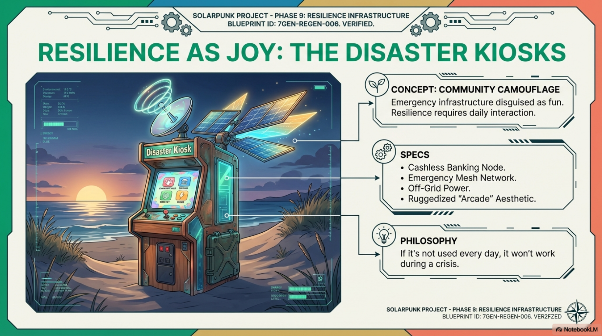
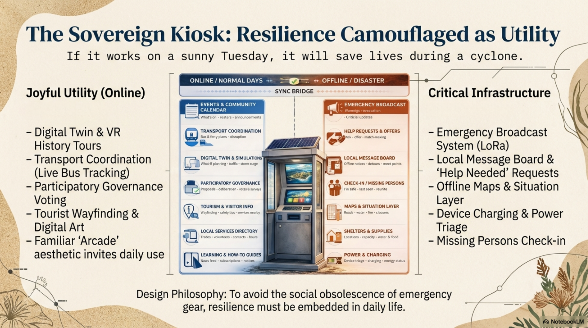
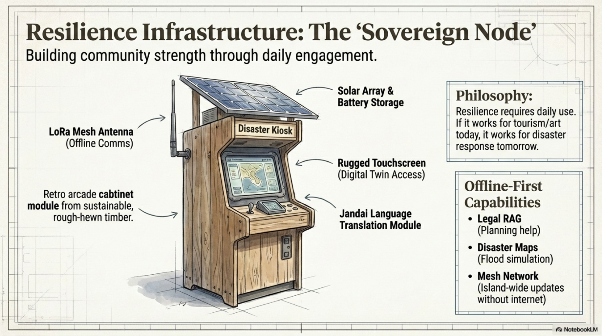
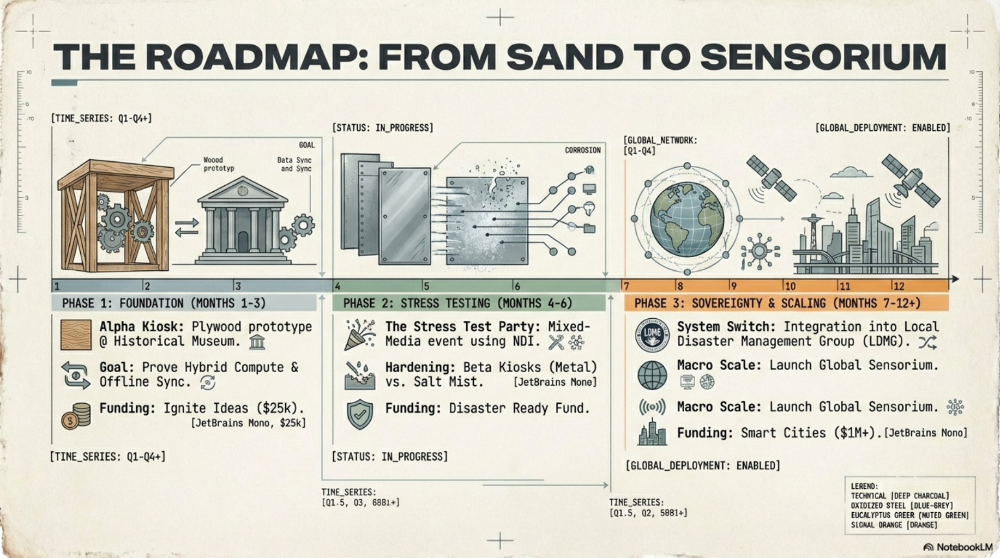
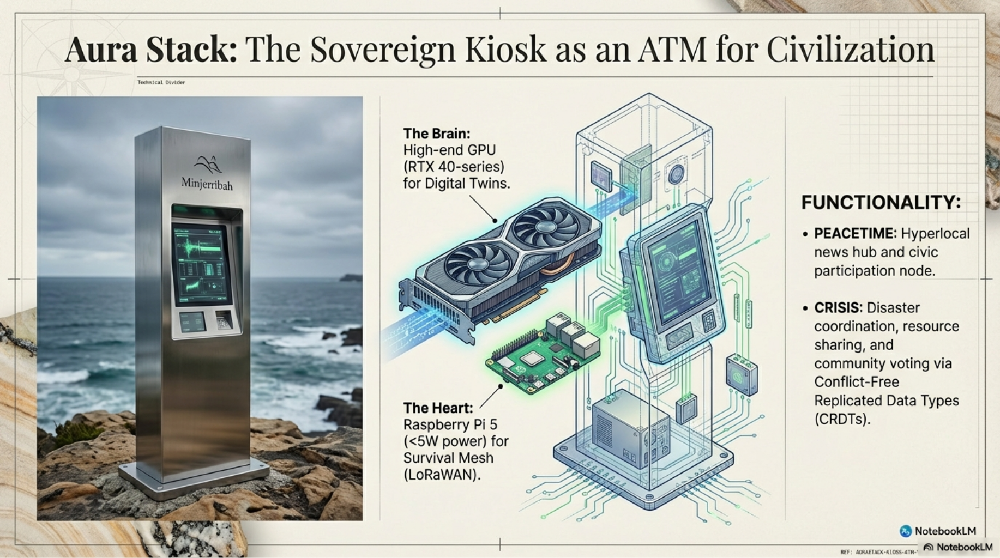
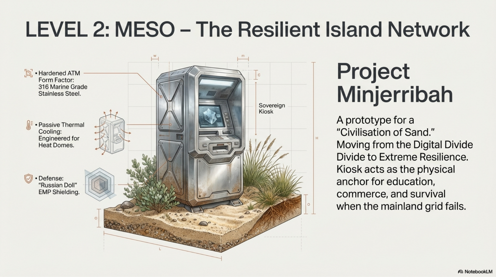

Local events, ferry and bus information, community calendar, digital literacy, visitor support and public notices.
Offline-first public infrastructure
Resilience hidden inside daily usefulness.
A Disaster Kiosk is a public touchpoint people can use on ordinary days for local information, training, transport help, tourism, digital access and community notices. If it works on a sunny Tuesday, it has a chance of working during a storm, ferry disruption, power outage or communications failure.

Plain-language purpose
The island needs useful nodes, not dusty emergency gear.
Emergency equipment can become invisible if nobody touches it until a crisis. The kiosk idea flips that. It gives locals, visitors, volunteers, businesses and community groups a reason to interact with the same infrastructure every week.
That everyday trust can become the social layer underneath emergency response: local maps, notices, check-ins, charging, help requests, offers of help and situation updates.
Cached maps, emergency guides, LoRa or mesh messaging concepts, local notice boards and low-power service modes.
Built around Minjerribah place, local protocol, Jandai language pathways, training and practical public benefit.
Two modes
Normal day utility. Crisis day infrastructure.
Online or normal days
- Community calendar and local notices
- Transport coordination and visitor wayfinding
- Digital twin previews, tours and planning explainers
- Training, how-to guides and local service directory
- Participatory governance, surveys and project feedback
Offline or disaster mode
- Emergency broadcasts and verified local updates
- Help-needed requests and offers of help
- Check-in and missing-persons support pathways
- Offline maps, shelter notes and supply information
- Device charging, power triage and local message board

Physical form
A sovereign node can start humble.
The early version does not need to be a final hardened ATM-style machine. A first pilot could be a rough, honest, visible prototype that proves the community workflow before expensive hardware decisions are locked in.
Later versions can harden toward solar, battery storage, passive cooling, weatherproof casing, mesh antenna, rugged touchscreen, local compute and secure offline sync.

Roadmap
From sand to sensorium.
Foundation
Build a simple Alpha Kiosk prototype, choose a safe public partner site, test local content, offline sync and community use.
Stress testing
Run a public event or simulation, test updates, maps, messages, device charging, salt air exposure and volunteer workflows.
Sovereignty and scaling
Connect with disaster management partners, local organisations, grant pathways and broader island resilience planning.

Concept visuals
Different forms for the same public idea.


Source documents
Pitch notes for the next conversation.
These are concept documents, not an active emergency service. They are useful for explaining the idea to local organisations, grant contacts, disaster resilience people and anyone who understands that infrastructure has to be trusted before it is needed.
Status: concept page and pitch material only. Emergency information must still come from official channels.
Shorter pitch material for explaining the practical local opportunity.
Open PDFBroader systems view of kiosks, mesh, community infrastructure and resilience logic.
Open PDFWhere public support for local projects can later connect back into the Strange but True ecosystem.
Open Ledger